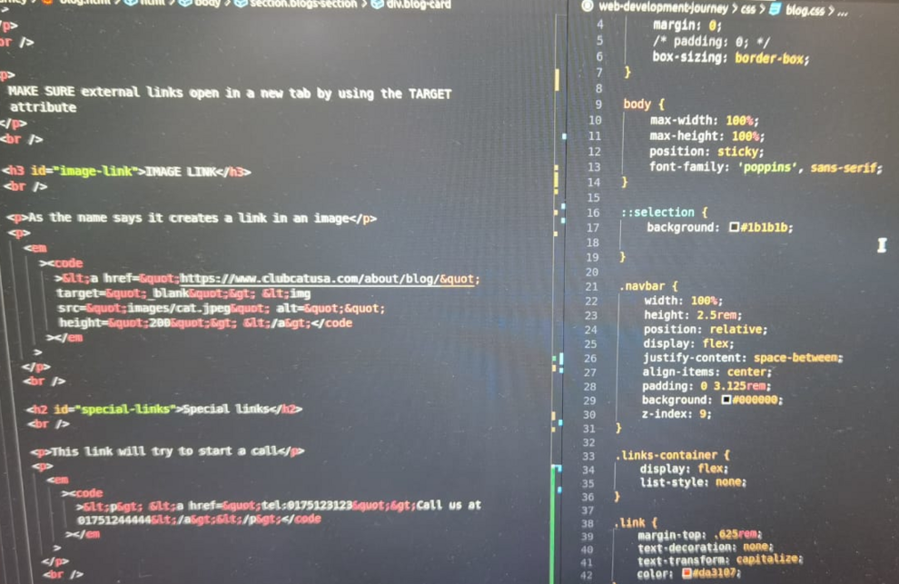
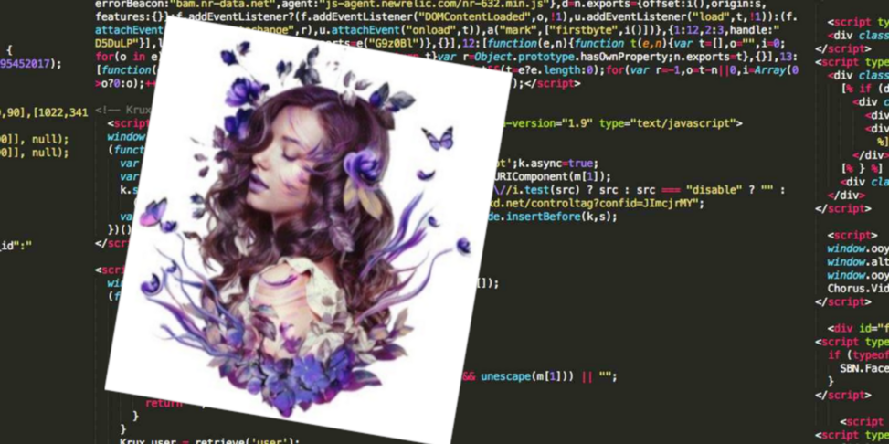
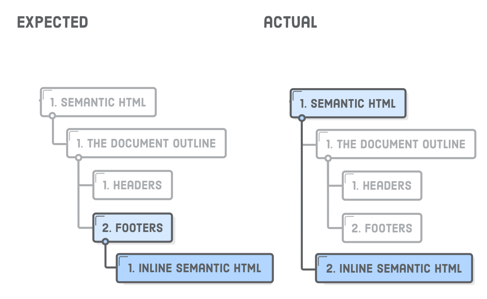

Web development the beginning of a journey.
February 7, 2023
First day! The anticipation of the start of a new adventure, the first steps in a career completely different from anything I had done here, creates an tingling like I haven't felt in many years.
Having the exact notion that this is the opportunity of a lifetime, the anxiety to get started is enormous.
At the age of 49 and a half, which is characterized by essentially never having been a happy and accomplished person on a professional level, the beginning of this adventure that is Web Development gives me the hope of finally doing something that I truly enjoy professionally.
Who would have thought that on August 24, 2020, when I ended my driving shift, I was struggling atrociously with unimaginable and impossible to describe pain, to the point of having entered the emergency room at the hospital in Rotthalmünster with a pain level of 10 out of 10 and being immediately hospitalized for 5 days just for pain control, it would be the only (very painful) part of a long stage of surgeries, pain, suffering, tears and a lot of frustration that would bring me here to this new adventure….
…. Web Development.
First day! The anticipation of the start of a new adventure, the first steps in a career completely different from anything I had done here, creates an tingling like I haven't felt in many years.
Having the exact notion that this is the opportunity of a lifetime, the anxiety to get started is enormous.
At the age of 49 and a half, which is characterized by essentially never having been a happy and accomplished person on a professional level, the beginning of this adventure that is Web Development gives me the hope of finally doing something that I truly enjoy professionally.
Who would have thought that on August 24, 2020, when I ended my driving shift, I was struggling atrociously with unimaginable and impossible to describe pain, to the point of having entered the emergency room at the hospital in Rotthalmünster with a pain level of 10 out of 10 and being immediately hospitalized for 5 days just for pain control, it would be the only (very painful) part of a long stage of surgeries, pain, suffering, tears and a lot of frustration that would bring me here to this new adventure….
…. Web Development.
Web developer the beginning!
February 10, 2023
8:45! -I turned on the computer, opened the Slack app to see if I had any relevant messages. I clicked on the link that takes me to the Zoom meeting.
After some anticipation, the day finally arrived. This long journey of over a year has begun.
New faces, new lives, new dynamics are about to enter my screen and who, throughout this learning that will take place online every day and week, will share this adventure with me.
The first few hours are acquaintance, normal formalities.
After introducing us to the Trainer who will accompany us on this adventure and after the first few minutes, something immediately jumps out, his calm manner (too calm) and somewhat disorganized with regard to the organization of thoughts shows that a lot of caffeine will be needed.
With the day ending, there was some skepticism towards the trainer...
...as the week went on, my fears about the trainer's way of teaching were confirmed. He is definitely a know-it-all, but his peculiar way of teaching very slow and a little disorganized is creating serious concentration problems for me.
It took us two days on a topic that should have been covered in one morning, frustration starts to get the better of me and we're still on the third day of training. I notice that the disgust with this situation is reflected in some other training colleagues. I confess that I am a very patient person with people, but inexplicably it is not like that, I feel frustrated because I expected much more (dynamics) and I fear that if it continues at this pace it will certainly not be an easy year…
...Friday, Soft Skills day. But what a breath of fresh air this day was. Dynamic, cheerful, with a lot of interaction between everyone and very, very interesting and enriching in terms of personal and collective knowledge.
The Coach knew how to captivate us for this session from the first moment. Compared to the previous days, it was like a huge and much-needed decompression. I deeply regret that we are only presented with the presence of this Coach for two sessions.
8:45! -I turned on the computer, opened the Slack app to see if I had any relevant messages. I clicked on the link that takes me to the Zoom meeting.
After some anticipation, the day finally arrived. This long journey of over a year has begun.
New faces, new lives, new dynamics are about to enter my screen and who, throughout this learning that will take place online every day and week, will share this adventure with me.
The first few hours are acquaintance, normal formalities.
After introducing us to the Trainer who will accompany us on this adventure and after the first few minutes, something immediately jumps out, his calm manner (too calm) and somewhat disorganized with regard to the organization of thoughts shows that a lot of caffeine will be needed.
With the day ending, there was some skepticism towards the trainer...
...as the week went on, my fears about the trainer's way of teaching were confirmed. He is definitely a know-it-all, but his peculiar way of teaching very slow and a little disorganized is creating serious concentration problems for me.
It took us two days on a topic that should have been covered in one morning, frustration starts to get the better of me and we're still on the third day of training. I notice that the disgust with this situation is reflected in some other training colleagues. I confess that I am a very patient person with people, but inexplicably it is not like that, I feel frustrated because I expected much more (dynamics) and I fear that if it continues at this pace it will certainly not be an easy year…
...Friday, Soft Skills day. But what a breath of fresh air this day was. Dynamic, cheerful, with a lot of interaction between everyone and very, very interesting and enriching in terms of personal and collective knowledge.
The Coach knew how to captivate us for this session from the first moment. Compared to the previous days, it was like a huge and much-needed decompression. I deeply regret that we are only presented with the presence of this Coach for two sessions.
week of contradictions
February 13, 2023
It was an interesting day. We are working on creating a code of conduct that will guide us throughout this training year.
The way in which the topic was addressed throughout the morning was undoubtedly very interesting and constructive.
During the afternoon we had the pleasure of having a different Basic Digital Literacy trainer who demonstrated, at least for me, what I have been thinking about teaching our resident trainer……
February 14, 2023
…. the day got off to a bad start, really bad to tell you the truth, our resident coach came back and with him the disorganized teaching.
It is not possible to try to teach commands in the “terminal” and not know what to respond to unforeseen situations.
At one point, I lost my temper and was very direct in expressing my frustration with the matter.
I should have had a different attitude, it wasn't good on my part and after the break I asked to speak in front of everyone, apologizing to the coach and other colleagues.
I realized that my learning ambitions do not match the slow and disorganized way we are experiencing in this course, but obviously I will have to adapt to these conditions, so I will remain discreet for the sake of my path in this course and the well-being of other colleagues ...
During the morning break, some people in the group decided to question the trainer about his way of teaching. I chose to turn off the camera and sound, I promised myself I'll keep a low profile, and I will.
After resuming the class, things evolved in a more fluid way, I hope I can finally start talking here about everything that has to do with the Web Development course and nothing about everything else.
We are essentially talking about the terminal installation of Node.js There were some problems with the way it was demonstrated in class, personally I opted for a different and more effective approach, using different commands than those used in class…
with the last command should appear .....
18.14.0
After....
In the afternoon the theme was centered on the “rpm” command
It is
Install an “npm” package. Check if and where this package has been installed. What command was used to check if and where the package was installed?
A way to test commands in the terminal.
At the end we did an evaluation
February 16, 2023
It was an interesting day dedicated to “Git”
Git is a free and open source distributed version control system designed to handle everything from small to very large projects with speed and efficiency.
After that, we start its installation and start using basic commands for your use…
After installing it, start your terminal and type the following command to verify that Git is ready to be used on your computer:
In your terminal, run the following commands to identify yourself with Git:
To create a new repository and start tracking your project with Git, use your terminal
This is a command that is very often used when working with Git. It shows us which files have been changed, which files are tracked, etc.
From the project folder, we can use the git add command to add our files to the staging area, which allows them to be tracked. We can add a specific file to the staging area with the following command:
o add multiple files, we can do this:
Instead of having to add the files individually, we can also add all the files inside the project folder to the staging area:
By default, this adds all the files and folders inside the project folder to the staging area, from where they are ready to be committed and tracked.
A commit is a snapshot of our code at a particular time, which we are saving to the commit history of our repository. After adding all the files that we want to track to the staging area with the git add command, we are ready to make a commit.
To commit the files from the staging area, we use the following command:
Inside the quotes, we should write a commit message which is used to identify it in the commit history.
The commit message should be a descriptive summary of the changes you are committing to the repository.
Git branching allows developers to diverge from the production version of code to fix a bug or add a feature. Developers create branches to work with a copy of the code without modifying the existing version.
You create branches to isolate your code changes, which you test before merging to the main branch Whenever we initialize a folder as a repository, there will be one default branch (typically called master).
We can create a branch that is a copy of (usually) the main branch. Then you can add your changes to this branch without affecting the main branch.
Creating a new branch
You can create a new branch using the following command:
Once we create a branch from master, they start living separate lives so to say. We don't want this to continue for too long, because it will become harder and harder to bring the two together.
For example, after you fully implemented and tested a new feature in your code, you would want to merge those changes to the stable branch of your project (which is usually the default master branch). To merge the changes from a different branch into your current branch, you can use this command:
t was a good day of learning...
February 17, 2023
Once again it was an interesting day where we focused on communication and feelings.
We focus on “Communications Square - Friedemann Schulz von Thun” in “Appreciative communication”
In another topic we talk about the topic: non-violent communication
The big difference goal: learn to differentiate own feelings from interpretation, diagnoses, thoughts
It was an interesting day. We are working on creating a code of conduct that will guide us throughout this training year.
The way in which the topic was addressed throughout the morning was undoubtedly very interesting and constructive.
During the afternoon we had the pleasure of having a different Basic Digital Literacy trainer who demonstrated, at least for me, what I have been thinking about teaching our resident trainer……
February 14, 2023
…. the day got off to a bad start, really bad to tell you the truth, our resident coach came back and with him the disorganized teaching.
It is not possible to try to teach commands in the “terminal” and not know what to respond to unforeseen situations.
At one point, I lost my temper and was very direct in expressing my frustration with the matter.
I should have had a different attitude, it wasn't good on my part and after the break I asked to speak in front of everyone, apologizing to the coach and other colleagues.
I realized that my learning ambitions do not match the slow and disorganized way we are experiencing in this course, but obviously I will have to adapt to these conditions, so I will remain discreet for the sake of my path in this course and the well-being of other colleagues ...
February 15, 2023
During the morning break, some people in the group decided to question the trainer about his way of teaching. I chose to turn off the camera and sound, I promised myself I'll keep a low profile, and I will.
After resuming the class, things evolved in a more fluid way, I hope I can finally start talking here about everything that has to do with the Web Development course and nothing about everything else.
We are essentially talking about the terminal installation of Node.js There were some problems with the way it was demonstrated in class, personally I opted for a different and more effective approach, using different commands than those used in class…
- source ~/.bashrc
- nvm list-remote
- nvm install v18.14.0 in V18.14.0 you replace with the latest version or the one you want from the list presented in the previous command
- nvm lts/hydrogen installation
- node -v
with the last command should appear .....
18.14.0
After....
- npm install -g npm@9.4.2
- sudo apt install rpm
In the afternoon the theme was centered on the “rpm” command
- npm init
- code .
It is
Install an “npm” package. Check if and where this package has been installed. What command was used to check if and where the package was installed?
A way to test commands in the terminal.
At the end we did an evaluation
February 16, 2023
It was an interesting day dedicated to “Git”
What is Git?
Git is a free and open source distributed version control system designed to handle everything from small to very large projects with speed and efficiency.
After that, we start its installation and start using basic commands for your use…
- sudo apt-get install git
After installing it, start your terminal and type the following command to verify that Git is ready to be used on your computer:
- git –version
In your terminal, run the following commands to identify yourself with Git:
- git config --global user.name "Your Name"
- git config --global user.email "your@email.com"
To create a new repository and start tracking your project with Git, use your terminal
- git init
This is a command that is very often used when working with Git. It shows us which files have been changed, which files are tracked, etc.
- git status
staging files
From the project folder, we can use the git add command to add our files to the staging area, which allows them to be tracked. We can add a specific file to the staging area with the following command:
- git add [filename]
o add multiple files, we can do this:
- git add [filename.1] [filename.2] [filename.3]
Instead of having to add the files individually, we can also add all the files inside the project folder to the staging area:
- git add .
By default, this adds all the files and folders inside the project folder to the staging area, from where they are ready to be committed and tracked.
Making commits
A commit is a snapshot of our code at a particular time, which we are saving to the commit history of our repository. After adding all the files that we want to track to the staging area with the git add command, we are ready to make a commit.
To commit the files from the staging area, we use the following command:
- git commit -m "Commit message"
Inside the quotes, we should write a commit message which is used to identify it in the commit history.
The commit message should be a descriptive summary of the changes you are committing to the repository.
Branching
Git branching allows developers to diverge from the production version of code to fix a bug or add a feature. Developers create branches to work with a copy of the code without modifying the existing version.
You create branches to isolate your code changes, which you test before merging to the main branch Whenever we initialize a folder as a repository, there will be one default branch (typically called master).
We can create a branch that is a copy of (usually) the main branch. Then you can add your changes to this branch without affecting the main branch.
Creating a new branch
You can create a new branch using the following command:
- merging branches
Once we create a branch from master, they start living separate lives so to say. We don't want this to continue for too long, because it will become harder and harder to bring the two together.
For example, after you fully implemented and tested a new feature in your code, you would want to merge those changes to the stable branch of your project (which is usually the default master branch). To merge the changes from a different branch into your current branch, you can use this command:
- git merge "branch-name"
t was a good day of learning...
February 17, 2023
soft skills day
Once again it was an interesting day where we focused on communication and feelings.
We focus on “Communications Square - Friedemann Schulz von Thun” in “Appreciative communication”
In another topic we talk about the topic: non-violent communication
- what we are feeling
The big difference goal: learn to differentiate own feelings from interpretation, diagnoses, thoughts
- Universal Needs
The beginning of learning
February 20, 2023
A new week will start with a different Teacher, but who has already been with us before and with a teaching style that pleases.
We've covered "git" and "GitHub"...
The history of GIT
Was created by Linus Torvalds to track changes to a project from multiple authors
Who likes the idea of travelling through time?
GIT is a way to travel through time for your project!
What is it?
GIT is a command line tool
We use GIT to keep track of changes to files
We can travel through those changes and see how a project appeared earlier in time
How does it work?
GIT does not automatically add your changes, until you tell it to
GIT will keep track of any file changes after you've used git add to track them
Each change or set of changes are recorded within the GIT repository as a commit
You can write a message with each commit
Commit Messages
Optional BUT
Who are you writing these messages for?
NOT for the computer!
- You are writing for your future self
- Co-workers, future developers, anyone else who might be working on the project
What should you write?
- Your message should make sense
- The message should explain in a short summary - what that commit did - what was the purpose
Example of a bad commit message
"Minor changes"
Example of a good commit message
"Fixed bug where video element was being generated as div"
Deleting files
Deleting a file is like any other change, you still have to add the deleted file before committing
! Even if you delete a file, it still exists in your history 11:23
Configuring GIT
Remember GitHub and GIT are separate entities
When configuring GIT, this has nothing to do with your GitHub account
There is no such thing as a "GIT account"
When you configure GIT;
git config --global user.name "Your Name" git config --global user.email "your@email.com"
There is no "verification" of that data - you can write anything you like
If you want change any of the configuration settings, you can just run those commands again
Bash
la / ll -a - shows hidden files
Bash commands can be broken down into smaller parts
git = command commit = subcommand -m = flag git commit -m
GIT
git init - create new git repository
git add - adds a file or files to a repository
git add filename add a single file git add . add EVERYTHING
git status - check current status
git log - shows you the history of a repository
git checkout - allows you to change to a different branch / commit hash
git rebase - very dangerous, but very powerful
git remote -v - show the remote repository
git clone - clone a repository from a remote location (you must include the URL)
Use the SSH version of the URL, not the HTTPS version 3:52 GitHub tutorial
- Created a .ssh folder in our home directory (~)#
- ssh-keygen -t ed25519 -C "email@email.com"
- Accept the defaults by pressing enter
- cat id_ed25519.pub
- Paste the public key in GitHub > Settings > SSH and PGP keys 3:54
Local and remote repositories
Local = anything that is available locally on your machine Remote = a repository which lives on a shared network resource
GitHub really shines here - the most post popular and easy to use remote GIT service
git remote -v - view the link to the remote repository
You can link to your remote repositories using either the HTTPS protocol or the SSH protocol
HTTPS
Using HTTPS means that every time you want to interact with your remote repository, you have to enter your username and password
SSH
Secure Shell
Before you can use SSH, you have to generate an SSH key - which will automatically be used when you interact with your remote repository
More work to setup to setup at the start, but saves you time compared to HTTPS
February 21, 2023
…. The day was a continuation of "Github"
git checkout main
git fetch - asks the remote, are there any new branches?
git config --global push.default current
Working in a Team
Example..... 2 people want to work together
- Dieter
- Mary
One of these people must create a repository
Mary creates the repository on GitHub
She shares the URL of the repository with Dieter
-
She uses git clone to make a copy
-
Dieter uses git clone to make a copy
GIT commits
When you create a commit, the contents of that commit should be related to each other
For example, if you make changes to the homepage - when you make your commit for the homepage, it should only include those changes for the homepage
Preparing a commit
- Before you can create a commit, you must add the files to the commit with git add
git add . - adds everything git add index.html - add just index.html
- git commit -m "Here is my message"
Commands
git push - sends new commits to the remote repository. Only sends commits!
Any changes outside of a commit are NOT sent (pushed) to the remote
git pull - pulls changes from the remote repository to the local repository
If you have any uncommitted changes, git pull will abort
git fetch - ask the remote, have any new branches been added?
git checkout {branch} - checks out to a specific branch, for example git checkout main will take you to the main branch
Branches
Within your repository, you can have multiple versions of the code you are working on
Most repositories will have a main or master branch, which represents the up-to-date version of the application.
Why use branches?
If you're working on your own, you don't need to use branches!
- When you're working in a team, if everybody commits to the same branch - it gets messy very quickly, because you are dealing with multiple commits and some of these commits may override each other (merge conflict)
- What if you make a mistake? What if you break the code? Working in a separate branch means your code is isolated from the rest of the team - any faults would be contained.
Working with branches
git branch - lists all local branches
git checkout {branchname} - moves to the branch specified in the command
git checkout -b {branchname} - creates a new branch with the name specified in the command
git branch --delete {branchname} - delete a branch with the name specified in the command
Creating a new branch creates a COPY of the branch we were previously on
When you're working on a project, you should not be working in the main/master branch - this is BAD PRACTISE!
When working on new features;
- Create a branch from main/master
- The new branch is called your feature branch
Integrating your code back to main / master
using git merge
- Checkout to the branch you want to merge into
- git merge {branchname} - merge from a branch into your currently checked out branch - for example, if you typed git merge homepage - you will be merging from the branch homepage into your current branch
Using Pull Requests
When you make a pull request, it is like you are politely asking your team "can I merge my changes with yours?"
Why do we use pull requests?
- It fulfills the requirements
- Check that you've not added errors in the code
- Creating a healthy discussion about the changes
- Getting feedback and learning from them
- You can actually feel part of a team
February 22, 2023
,,, Today we start a new Module "User Interface Basic"
HTML (Hypertext Markup Language) is a standard language used to create the structure and content of web pages. HTML provides a basic user interface for displaying text, images, and other media on the internet.
In terms of user interface, HTML provides the building blocks for creating interactive elements like buttons, forms, and menus. These elements can be styled using CSS (Cascading Style Sheets) to create a visually appealing and user-friendly interface.
HTML also provides the ability to include hyperlinks, which allow users to navigate between pages and websites. This is an essential aspect of the user interface as it enables users to access the information they are looking for quickly and efficiently.
Overall, HTML provides the foundation for creating a user-friendly and interactive web interface. By using HTML along with CSS and other programming languages, developers can create complex web applications and websites that are easy to use and navigate.
Web Standards
- HTML
- CSS
- JavaScript - can be obfuscated by the machines
Browsers
- Chrome
- Firefox
- Safari
- Brave
Request Response Cycle
- GET request "getting information" from the server
HTML
hyper text markup language
index.htm or index.html
HTML Versions
- HTML 1.1 (1992)
- HTML 5 (2014)
HTML Markup
2 types
-
exists as a pair
My website rules!
-
self closing
Attributes
Composed of 2 parts
Key (src) and Value "logo.jpg"
src="logo.jpg"
Shortcuts for Visual Studio Code
! Loads boilerplate HTML
link Produces a list of different assets you can link link:css
CSS Introduction
Cascading Style Sheets
Styling
What if I don't like;
- The size of the text?
- The space between the characters of text (kerning)?
- The colour of the text?
- The font used?
- The background colour?
We can change all these things with CSS (styles)
CSS Versions
- CSS 1 (1996)
- CSS 3 (1999)
Content is NOT style
How to include the styles on a page
- Inline with the HTML tags - NOT RECOMMENDED
- Embed it with the HTML
- Create a separate file - RECOMMENDED
How to write CSS styles
4 ways to target styling HTML content;
-
The tag or the markup - h2
Will target ALL tags of the same type
-
Classes - .highlight
Precise way to target 1 or more elements with the same styles
Pseudo-classes
IDs
How to construct a style
- All style rules must be contained within curly braces
{ }
We call this the style declaration
- All style declarations must start with a selector
For example; h2
February 23, 2023
It was a day dedicated to reviewing all the information we had the day before with some exercises to assimilate these teachings.
There continue to be some difficulties (more confusion than difficulties) about branches and commits.
February 24, 2023
Day dedicated to Soft Skills with the theme "Intercultural Competences"
But what are Intercultural Competences?
Intercultural competences refer to the ability to understand, communicate, and interact effectively with people from different cultures. It involves the knowledge, attitudes, and skills needed to navigate diverse cultural settings and to build positive relationships with people from different backgrounds.
Some common intercultural competences include:
Cultural awareness: having an understanding of one's own cultural background and being open to learning about other cultures.
Communication skills: being able to communicate effectively with people from different cultures, including the ability to listen actively, ask questions, and provide feedback.
Flexibility and adaptability: being able to adjust one's behavior and communication style to fit different cultural contexts.
Empathy: being able to understand and appreciate the perspectives and experiences of people from different cultures.
Conflict resolution skills: being able to resolve conflicts that may arise in intercultural interactions, including the ability to negotiate, compromise, and find mutually acceptable solutions.
Developing intercultural competences is becoming increasingly important in our globalized world, where people from different cultures are increasingly working and living together.
Classes, Links, Combinators and Units.
February 27, 2023
A new week will start with a new Teacher and this time apparently permanent, I checked her corriculun on LinkedIn and it is impressive, I confess that for a first impression it surprises for the positive and with a didactic that pleases.
We've covered "Classes and IDs"...
We start by talking about pages, the "head" section and the elements it contains
To start we need make sure the starting page is called index.html otherwise the server will not recognize it and you will see a bunch of files and directories
Favicon
<
CSS links
external css (recommended) priority 3
<link rel="stylesheet"
href="css/styles.css" />
internal css priority 2
- In order to add internal styles we use the style tag
inline css (highest priority 1)
- In order to add inline style we use the style ATTRIB
<h1 style="background-color: lightblue">Classes
and IDs</h1>
We have seen how to style an element using the general selector (eg. h1, p etc..) We can also select elments using classes and IDs
What is Classes?
The class attribute specifies one or more class names for an element.
Classes are used by CSS and JavaScript to select and access specific elements.
The class attribute can be used on any HTML element.
The class name is case sensitive.
Different HTML elements can point to the same class name.
We can applying multiple classes to the same element In the example below "redBg" and "white" are 2 different classes.
We need to make sure you leave a space between them.
*
<p> class="redBg greenBg white">Multiple
classes</p>
What is IDs?
The HTML id attribute is used to specify a unique id for an HTML element.
You cannot have more than one element with the same id in an HTML document.
The id attribute specifies a unique id for an HTML element. The value of the id attribute must be unique within the HTML document.
The id attribute is used to point to a specific style declaration in a style sheet. It is also used by JavaScript to access and manipulate the element with the specific id.
The syntax for id is: write a hash character (#), followed by an id name. Then, define the CSS properties within curly braces {}.
February 28, 2023
…. The day started with a review of an exercise and then we moved on to new content...
Links and pseudo classes
A website is made up by several pages. In order to jump from one page to the other we use links
Link features
- An unvisited link is blue and underlined
- An visited link is underlined and purple
- An active link is underlined and red
Link in action
To create a link use the "a" tag href is a very important attribute. It describes the link destination
- INTERNAL LINK An internal link points to a page within your project
<p>To go to the about page click <a
href="aboutPage.html"> HERE </a></p>
- EXTERNAL LINK Points you to a page located elsewhere.. outside of your project/domain
<a href="https://www.google.com"
target="_blank">Google</a>
MAKE SURE external links open in a new tab by using the TARGET attribute
IMAGE LINK
As the name says it creates a link in an image
<a href="https://www.clubcatusa.com/about/blog/"
target="_blank"> <img
src="images/cat.jpeg" alt=""
height="200"> </a>
Special links
This link will try to start a call
<p> <a href="tel:0175123123">Call us at
01751244444</a></p>
This link will open a pdf file
<p><a href="images/cat.jpeg" download>
Click here to download img </a></p>
When we use the "download" command, clicking on it does not open the file but downloads automatically
March 1, 2023
,,, Today we start with "Selectors and combinators"
CSS Combinators
A combinator is something that explains the relationship between the selectors.
A CSS selector can contain more than one simple selector. Between the simple selectors, we can include a combinator.
There are four different combinators in CSS:
- descendant selector (space)
- child selector (>)
- adjacent sibling selector (+)
- general sibling selector (~)
Descendant Selector
The descendant selector matches all elements that are descendants of a specified element.
The following example selects all <span> elements
inside <h2> elements:
HTML
`<section>
<h2>
<p>This is paragraph <span>1</span></p>
</h2>
<p>this is paragraph 2</p>
<div>
<p>this is paragraph 3</p>
</div>
</section>`
CSS
DESCENDANT (space)
`h2 span { /_ selects a span inside an h2 (loose) _/
color: cadetblue;
font-weight: bold;
font-size: 30px;
background-color: white;
}`
Child Selector (>)
The child selector selects all elements that are the children of a specified element.
The following example selects all <p> elements that
are children of a <section> element:
HTML
`<section>
<h2>
<p>This is paragraph <span>1</span></p>
</h2>
<p>this is paragraph 2</p>
<div>
<p>this is paragraph 3</p>
</div>
</section>`
CSS
`section > p { /* selects a p that is an immediate child of section */
border: 5px dashed green;
}`
Adjacent Sibling Selector (+)
The adjacent sibling selector is used to select an element that is directly after another specific element.
Sibling elements must have the same parent element, and "adjacent" means "immediately following".
The following example selects the first <p> element
that are placed immediately after <div> elements:
HTML
`<div>I am Div</div>
<p>I am the first p following a div</p>
<p>I am the second p following a div </p>`
CSS
`div + p { /* The FIRST p coming IMMEDIATELY AFTER a div will be selected */
background-color: orange;
}`
General Sibling Selector (~)
The general sibling selector selects all elements that are next siblings of a specified element.
The following example selects all <purple> class,
elements that are next siblings of <div> elements:
HTML
`<div class="purple">All ul after me will have a purple background</div>
<ul>
<li>item 1</li>
<li>item 2</li>
<li>item 3</li>
<li>item 4</li>
</ul>`
CSS
`.purple ~ ul { /* All ULs coming after .purple will be selected */
background-color: purple;
}`
PSEUDO SELECTORS
- first-child - targets the first child of an element
- lst-child - targets the last child of an element
- nth-child(n/even/odd) - target each element that is the nth child of its parent
HTML
`<ol class="pseudoSelectors">
<li>The first paragraph</li>
<li>The second paragraph</li>
<li>The third paragraph</li>
<li>The fourth paragraph</li>
</ol>
<ol class="pseudoSelectors2">
<li>The first paragraph</li>
<li>The second paragraph</li>
<li>The third paragraph</li>
<li>The fourth paragraph</li>
</ol>`
CSS
`.pseudoSelectors li:first-child {
background-color: lightgreen;
}
.pseudoSelectors li:last-child {
background-color: midnightblue;
color: white;
}
.pseudoSelectors li:nth-child(2) {
background-color: teal;
}
.pseudoSelectors2 li:nth-child(even) {
background-color: purple;
color:white;
}
.pseudoSelectors2 li:nth-child(odd) {
background-color: violet;
}`
March 2, 2023
It was a day dedicated to Css Units
Css units are important for setting dimensions (height, width, margin etc..)
CSS has several different units for expressing a length.
Many CSS properties take "length" values,
such as width, margin, padding,
font-size, etc.
Length is a number followed by a length unit, such as 10px, 2em, etc.
Note: A whitespace cannot appear between the number and the unit. However, if the value is 0, the unit can be omitted.
For some CSS properties, negative lengths are allowed.
There are two types of length units: absolute and relative.
Absolute unit (Pixel) - keeps the same size at all times
Pixel
Dimensions set in Px
Pixels pros and cons
-
px
- Pixels will always look the same across all devices (mobile desktop, tablet)
- PRO: easy to work with
- CONS: Not good for responsive design
- CONS: Px override user's preference (browser)
- TIP: Never set font-size in PX
- USAGE: px for minor adjustments (shadows, borders and specific things)
Relative units
Percentage % (relative to its immediate parent)
25%
This box is less wide because it's 25% of the parent width ( 150px )
25%
-
%
- relative to the parent WIDTH. Height in % will not work UNLESS the parent has a hight set in px.
- PRO - useful for building layouts that shrink and grow
- CONS - You might have excessive shrinkage so use it in combo with max-width and min-width
- USAGE - Large layout concerns
viewport height and viewport width (entire screen size - scrollbar included )
vh and vw (relative to the viewport)
25vw
25vh
25vw
-
vh and vw
- Relative to the height/width of the viewport
- PRO - Useful to fill up entire hight/width
- CONS - Mostly only vh makes sense
- USAGE - to achieve full height
When it comes to font-size you want to use rem and em
rem and em ( Font-size )
2rem
2em
Wrapping parent with specific font-size
rem
em
-
rem - (root em)
- Relative to font size of root element (html)
- PRO - handles nested elements properly
- CONS - may require some calculations when translating to PX
- USAGE: font size, margins, paddings
-
Em
- Relative to font size immediate parent
- PRO - it is scalable
- CONS - avoid nesting or things can get out of hand
- USAGE: font size, margins, paddings
"em" is a bit special and we have to bear in mind that the values are relative to the font-size of element (2em means 2 times more the size of the corrent font)
March 3, 2023
Free day
Image, Accessibility, Block and inline boxes
March 6, 2023
We've covered "images"in this new week...
Images
In order to add images we need to add an img tag The image tag has 2 required attributes:
- src - specifies the path
- alt - specifies text to display in case the image can't be loaded (important for SEO & accessibility)
If we add an image without style the image will have its natural size
there are 2 ways of setting image size
- width/height attribute is always intended in px. Do not specify unit.
- we can specify width/height in the css as well in that case we can use any unit
- try to specify 1 dimension only in order to preserve aspect-ratio
Image 100% width
if you want an image to fill up the entire width set width to 100%
<img
src="images/seaHorse.jpeg"
alt="seahorse swimming"
style="width: 100%">
External images
When an external image is not located in our project
<img
src="https://www.hepper.com/wp-content/uploads/2021/10/Neva-masquerade-cat-sitting-on-linens_Tania__Wild_Shutterstock.jpg"
alt="kitten sitting on blanket"
height="300">

Placeholder images ( PICSUM )
getting a random image
<img src="https://picsum.photos/300/300" alt="random image">
- specific image
- remember to set the specific id followed by width and height
<img src="https://picsum.photos/id/237/200/300" alt="cute black puppy">
Adding grayscale
<img src="https://picsum.photos/id/237/200/300?grayscale"
alt="cute black puppy">
Image issues
It is not good practice to use height and width because if we do not know exactly the measurements of the image it will be deformed, this will result in a squished image
<img src="images/seaHorse.jpeg" alt="seahorse" width="200" height="400">
Images as links
We can add image as a link and other HTML elements as a link.
A link is a connection from one Web page to another web page.
We can add page links to a web page. HTML links are hyperlinks. The
<a> tag defines a hyperlink and used to link from one page to
another.
href attribute is used with the <a> tag, which indicates the
link's destination.
<a
href="https://usfblogs.usfca.edu/sustainability/2020/05/20/all-about-seahorses/"
target="_blank"
>
<img src="images/seaHorse.jpeg" alt="seahorse" width="200" />
March 7, 2023
Accessibility
Accessible design is that which accommodates everyone, which special
attention to those with disabilities and limitations. We see
accessibility baked into the world around us, from closed captioning to
curb cuts.
When it comes to accessibility on the web, however, we have a lot more
work to do. According to a recent survey of screen reader users, 60% of
respondents believed that overall web accessibility had either remained
the same or had worsened since the previous year.
The good news is that, with a bit of extra care taken on the back-end,
any website can be made accessible to users of assistive technologies
like screen readers. By investing in web accessibility, not only do you
ensure a positive user experience for everyone — you also show your
visitors that you care about equal access to your content. And it all
starts with taking a look at your site’s underlying HTML.
In this guide, you’ll learn the basics of how to build a web page that
works with assistive technologies — we’ll review six aspects of HTML
that make this possible. For those unfamiliar with web development, we
recommend first reviewing our introduction to HTML, CSS, and JavaScript,
as well as our full guide to HTML, before continuing
Prefer semantic elements.
Use div and span only for layout purposes
heading in subsequent order
Main section title
Second level title
the next sectino can still start from h2
Main section title
Second level title
Aria label
an aria label is an attribute used as a label to define the current
element
it is used on interactive elements (buttons, links etc.. )
the only thing accessible to the screen reader is the X
<button aria-label="Close popup">X </button>
Roles
If you are not using semantic elements you can still add roles to them to make them more accessible
imagine we have a link that acts like a button (legacy code)
<a href="#">Delete</a>
In this case we are using a link for a functionality that belongs to a button. Add a role to make it accessible.
<a href="#" role="button" aria-label="delete item 1">Delete<a>
The role can also be applied to non semantic tags in order to make them accessible
<div role="navigation">
<ul>
<li>Home<li>
<li>About</li>
<li>Content</li>
</ul>
</div>
March 9, 2023
Block and inline boxes
In CSS we have several types of boxes that generally fit into the categories of block boxes and inline boxes. The type refers to how the box behaves in terms of page flow and in relation to other boxes on the page. Boxes have an inner display type and an outer display type.
In general, you can set various values for the display type using the display property, which can have various values.
Outer display type
If a box has an outer display type of block, then:
- The box will break onto a new line.
-
The
widthandheightproperties are respected. - Padding, margin and border will cause other elements to be pushed away from the box.
- If width is not specified, the box will extend in the inline direction to fill the space available in its container. In most cases, the box will become as wide as its container, filling up 100% of the space available.
Some HTML elements, such as <h1> and
<p>, use block as their outer display
type by default.
If a box has an outer display type of inline, then:
- The box will not break onto a new line.
- The width and height properties will not apply.
- Vertical padding, margins, and borders will apply but will not cause other inline boxes to move away from the box.
- Horizontal padding, margins, and borders will apply and will cause other inline boxes to move away from the box.
Some HTML elements, such as <a>,
<span>, <em> and
<strong> use inline as their outer
display type by default.
Inner display type
Boxes also have an inner display type, which dictates how elements inside that box are laid out.
Block and inline layout is the default way things behave on the web. By default and without any other instruction, the elements inside a box are also laid out in normal flow and behave as block or inline boxes.
You can change the inner display type for example by setting
display: flex;. The element will still use the outer
display type block but this changes the inner display type
to flex. Any direct children of this box will become flex
items and behave according to the
Flexbox
specification.
When you move on to learn about CSS Layout in more detail, you will
encounter flex, and various other inner values that your boxes can have,
for example
grid.
Note: To read more about the values of display, and how boxes work in block and inline layout, take a look at the MDN guide Block and Inline Layout.
Examples of different display types
The example below has three different HTML elements, all of which have
an outer display type of block.
- A paragraph with a border added in CSS. The browser renders this as a block box. The paragraph starts on a new line and extends the entire available width.
-
A list, which is laid out using
display: flex. This establishes flex layout for the children of the container, which are flex items. The list itself is a block box and — like the paragraph — expands to the full container width and breaks onto a new line. -
A block-level paragraph, inside which are two
<span>elements. These elements would normally beinline, however, one of the elements has a class of "block" which gets set todisplay: block.
In the next example, we can see how inline elements behave.
-
The
<span>elements in the first paragraph are inline by default and so do not force line breaks. -
The
<ul>element that is set todisplay: inline-flexcreates an inline box containing some flex items. -
The two paragraphs are both set to
display: inline. The inline flex container and paragraphs all run together on one line rather than breaking onto new lines (as they would do if they were displaying as block-level elements).
To toggle between the display modes, you can change
display: inline to display: block or
display: inline-flex to display: flex.
The key thing to remember for now is: Changing the value of the
display property can change whether the outer display type
of a box is block or inline. This changes the way it displays alongside
other elements in the layout.
What is the CSS box model?
The CSS box model as a whole applies to block boxes and defines how the different parts of a box — margin, border, padding, and content — work together to create a box that you can see on a page. Inline boxes use just some of the behavior defined in the box model.
To add complexity, there is a standard and an alternate box model. By default, browsers use the standard box model.
Parts of a box
Making up a block box in CSS we have the:
-
Content box: The area where your content is
displayed; size it using properties like
inline-sizeandblock-sizeorwidthandheight. -
Padding box: The padding sits around the content as
white space; size it using
paddingand related properties. -
Border box: The border box wraps the content and any
padding; size it using
borderand related properties. -
Margin box: The margin is the outermost layer,
wrapping the content, padding, and border as whitespace between this
box and other elements; size it using
marginand related properties.
Image, Accessibility, Block and inline boxes
March 13, 2023
Semantic elements
With over 100 HTML elements, and the ability to create custom elements, there are infinite ways to mark up your content; but some ways—notably semantically—are better than others.
Semantic means "relating to meaning". Writing semantic HTML means using HTML elements to structure your content based on each element's meaning, not its appearance.
This series hasn't covered many HTML elements yet, but even without knowing HTML, the following two code snippets show how semantic markup can give content context. Both use a word count instead of ipsum lorem to save some scrolling—use your imagination to expand "thirty words" into 30 words:
The first code snippet uses <div> and
<span>, two elements with no semantic value.
<div>
<span>Three words</span>
<div>
<a>one word</a>
<a>one word</a>
<a>one word</a>
<a>one word</a>
</div>
</div>
<div>
<div>
<div>five words</div>
</div>
<div>
<div>three words</div>
<div>forty-six words</div>
<div>forty-four words</div>
</div>
<div>
<div>seven words</h2>
<div>sixty-eight words</div>
<div>forty-four words</div>
</div>
</div>
<div>
<span>five words</span>
</div>Do you get a sense of what those words expand to? Not really.
Let's rewrite this code with semantic elements:
<header>
<h1>Three words</h1>
<nav>
<a>one word</a>
<a>one word</a>
<a>one word</a>
<a>one word</a>
</nav>
</header>
<main>
<header>
<h1>five words</h1>
</header>
<section>
<h2>three words</h2>
<p>forty-six words</p>
<p>forty-four words</p>
</section>
<section>
<h2>seven words</h2>
<p>sixty-eight words</p>
<p>forty-four words</p>
</section>
</main>
<footer>
<p>five words</p>
</footer>
Which code block conveyed meaning? Using only the non-semantic elements
of <div> and <span>, you really
can't tell what the content in the first code block represents. The
second code example, with semantic elements, provides enough context for
a non-coder to decipher the purpose and meaning without having ever
encountered an HTML tag. It definitely provides enough context for the
developer to understand the outline of the page, even if they don't
understand the content, such as content in a foreign language.
In the second code block, we can understand the architecture even
without understanding the content because semantic elements provide
meaning and structure. You can tell that the first header is the site's
banner, with the <h1> likely to be the site name. The
footer is the site footer: the five words may be a copyright statement
or business address.
Semantic markup isn't just about making markup easier for developers to read; it's mostly about making markup easy for automated tools to decipher. Developer tools demonstrate how semantic elements provide machine-readable structure as well.
Accessibility object model (AOM)
As the browser parses the content received, it builds the document object model (DOM) and the CSS object model (CSSOM). It then also builds an accessibility tree. Assistive devices, such as screen readers, use the AOM to parse and interpret content. The DOM is a tree of all the nodes in the document. The AOM is like a semantic version of the DOM.
Use semantic landmarks conveniently named
<header>, <main>,
<footer>, and <nav> for
"navigation". Landmarks provide structure to web content and ensure
important sections of content are easily keyboard navigable for screen
reader users.
Note that <header> and
<footer> are landmarks, with the roles of
banner and contentinfo respectively, when they
are not nested in other landmarks.
Looking at Chrome developer tools, you'll note a significant difference between the accessibility object model when using semantic elements versus when you don't.
It's pretty clear that semantic element usage helps accessibility, and using non-semantic elements reduces accessibility. HTML is generally, by default, accessible. Our job as developers is to both protect HTML's default accessible nature and ensure that we maximize accessibility. You can inspect the AOM in developer tools.
Semantic elements
Asking yourself, "Which element best represents the function of this section of markup?" will generally result in you picking the best element for the job. The element you choose, and therefore the tags you use, should be appropriate for the content you are displaying, as tags have semantic meaning.
HTML should be used to structure content, not to define content's appearance. The appearance is the realm of CSS. While some elements are defined to appear a certain way, don't use an element based on how the user agent stylesheet makes that element appear by default. Rather, select each element based on the element's semantic meaning and functionality. Coding HTML in a logical, semantic, and meaningful way helps to ensure CSS is applied as intended.
Choosing the right elements for the job as you code means you won't have to refactor or comment your HTML. If you think about using the right element for the job, you'll most often pick the right element for the job. If you don't, you probably won't. When you understand the semantics of each element and are aware of why choosing the right element is important, you will generally be able to make the right choice without much additional effort.
March 14, 2023
How to Implement a Background Image in HTML
Adding a Background Image in HTML is one of the most common tasks when you are working on Web Designing. The following pointers will be covered in this article:
Background Image In HTML
There are various ways in which images can be added to a web page to make it look captivating & appealing. One of such ways is adding background image. In this blog we will understand how we can add background images in a webpage using HTML & CSS. The most common & simple way to add background image is using the background image attribute inside the <body> tag.
Example
<!DOCTYPE html>
<html>
<body background="edureka.png">
<h1>Welcome to Edureka</h1>
<p><a href="https://www.edureka.co">Edureka.co</a></p>
</body>
</html>
The background attribute which we specified in the <body> tag is not supported in HTML5. Using CSS properties, we can also add background image in a webpage.
CSS background-image Property
In all the examples, we will be defining the CSS code inside the <style> tag. We will also look how to target div tag and class using CSS. In the below example, we are specifying the background-image & background-color CSS property which will set the background image & background property for the HTML body respectively.
Moving on with this article on Background Image In HTML
Example
<!DOCTYPE html>
<html>
<head>
<style>
body {
background-image: url("bg1.jpg");
background-color: #cccccc;
}
</style>
</head>
<body>
<p>Document Body</p>
</body>
</html>
You can also go ahead and add two background images for the <body>
element.
Example
body {
background-image: url("bg3.png"), url("bg1.jpg");
background-color: #cccccc;
}
Notes:
-
The background image by default is added to the left corner & is repeated both ways, i.e. horizontally & vertically.
-
The reason why it is preferred to keep a background color is that if the image is unavailable, so the background-color property will be used and the same will be displayed.
Now before understanding how we can use different CSS property values, let’s look at the list of CSS property values associated with the background image.
- url: URL to the background image. In case of more than one image, comma-separated list needs be provided.
- linear-gradient(): Sets a linear gradient as the background image. Needs at least 2 colors.
- radial-gradient(): Sets a radial gradient as the background image. Needs at least 2 colors.
- repeating-linear-gradient(): Repeats a linear gradient
- repeating-radial-gradient(): Repeats a radial gradient
- initial: Sets the property to its default value
- inherit: Inherits this property from its parent element
Moving on with this article on Background Image In HTML
Now let’s execute some of the examples to understand how to use CSS property values.
Background Repeat
Here we are trying to add couple of background images wherein the first image will appear only one time and the second image will be repeated. We are using background-repeat to do so.
body {
background-image: url("bg2.jpg"), url("bg3.png");
background-repeat: no-repeat, repeat;
background-color: #cccccc;
}
Moving on with this article on Background Image In HTML
Using Class
In this example, we are creating bg-image with various background properties such as image, color, position & repeat. We are targeting the bg-image class to apply the background properties to the webpage.
body {
margin: 0;
font-family: Arial, Helvetica, sans-serif;
}
.bg-image {
background-image: url("bg2.jpg");
background-color: #cccccc;
height: 500px;
background-position: center;
background-repeat: no-repeat;
background-size: cover;
position: relative;
}
.bg-text {
text-align: center;
position: absolute;
top: 50%;
left: 50%;
transform: translate(-50%, -50%);
color: white;
}
Linear Gradient
Here we are creating a linear-gradient using two colors(i.e. red & yellow) and setting it as the background image.
#gradient {
height: 200px;
background-color: #cccccc;
background-image: linear-gradient(red, yellow);
}
3 Color Gradient
Here we are creating a linear-gradient using three colors(i.e. red, blue & green) and setting it as the background image.
#gradient1 {
height: 300px;
background-color: #cccccc;
background-image: linear-gradient(red, blue, green);
}
Repeating Linear Gradient
In this example, we are repeating the linear gradient using repeating-linear-gradient() functions and setting it as the background image.
#gradient1 {
height: 300px;
background-color: #cccccc;
background-image: repeating-linear-gradient(red, blue 20%, green 30%);
}
Radial Gradient
Here we are creating a radial-gradient using two colors(i.e. red & yellow) and setting it as the background image.
<!DOCTYPE html>
<html>
<head>
<style>
#gradient1 {
height: 300px;
background-color: #cccccc;
background-image: radial-gradient(green, red);
}
</style>
</head>
<body>
<h1 style="font-size:50px">Edureka</h1>
<h3>E-Learning</h3>
<button>About Us</button>
<p id="gradient1">Body Text</p>
</body>
</html>
3 Color Radial Gradient
Here we are creating a radial-gradient using three colors(i.e. red, blue & green) and setting it as the background image.
#gradient1 {
height: 500px;
background-color: #cccccc;
background-image: radial-gradient(red, blue, green);
}
Repeating Radial Gradient
In this example, we are repeating the radial gradient using
repeating-radial-gradient() functions and setting it as the background
image.
#gradient1 {
height: 200px;
background-color: #cccccc;
background-image: repeating-radial-gradient(red, blue 10%, green 20%);
}
March 16, 2023
Wondering about the difference between UX and UI? You’ve come to the right place.
UX design and UI Design are often used interchangeably, but actually, they describe very different things.
Read on to learn what the terms UI and UX mean, which of the two areas of design are better paid, and how to become a UX designer or UI designer.
- What are UX and UI in the first place?
- What’s the difference between UX and UI design?
- How do UX design and UI design work together?
- UX vs. UI design: Which career path is better?
- UI/UX differences: a visual overview
- Wrap-up and further reading
1. What are UX and UI in the first place?
First things first: What do UX and UI actually mean?
UX design refers to the term "User experience design", while UI stands for "User interface design". Both elements are crucial to a product and work closely together. But despite their professional relationship, the roles themselves are quite different, referring to very different aspects of the product development process and the design discipline.
Before considering the key differences between UX and UI, let’s first define what each term means individually.
What is user experience (UX) design?
User experience design is a human-first way of designing products. Don Norman, a cognitive scientist and co-founder of the Norman Group Design Consultancy, is credited with coining the term “user experience” in the late 1990s. Here’s how he describes it:
“User experience encompasses all aspects of the end-user’s interaction with the company, its services, and its products.”
– Don Norman, Cognitive Scientist & User Experience Architect
Clear, right? Well, you might note immediately that despite what I implied in the introduction, the definition has no reference to tech, no mention of digital, and doesn’t tell us all that much about what a UX designer actually does. But like all professions, it’s impossible to distill the process from just a few words.
Still, Don Norman’s definition tells us that, regardless of its medium plenty of non-digital UX (and there are lots out there) UX Design encompasses any and all interactions between a potential or active customer and a company.
As a scientific process, it could be applied to anything; street lamps, cars, Ikea shelving, and so on.
The digital application of UX
However, despite being a scientific term, its use since inception has been almost entirely within digital fields; one reason for this being that the tech industry started blowing up around the time of the term’s invention.
Essentially, UX applies to anything that can be experienced—be it a website, a coffee machine, or a visit to the supermarket. The “user experience” part refers to the interaction between the user and a product or service. User experience design, then, considers all the different elements that shape this experience.
What does UX design involve?
A UX designer thinks about how the experience makes the user feel and how easy it is for the user to accomplish their desired tasks. They also observe and conduct task analyses to see how users actually complete tasks in a user flow.
For example: How easy is the checkout process when shopping online? How easy is it for you to grip that vegetable peeler? Does your online banking app make it easy for you to manage your money?
The ultimate purpose of UX design is to create easy, efficient, relevant, and all-around pleasant experiences for the user.
We’ll answer the question “What does a UX designer do?” more thoroughly in section four. For now, here’s what you need to know about UX design in a nutshell:
- User experience design is the process of developing and improving the quality of interaction between a user and all facets of a company.
- User experience design is, in theory, a non-digital (cognitive science) practice but used and defined predominantly by digital industries.
- UX design is NOT about visuals; it focuses on the overall feel of the experience.
What is user interface (UI) design?
Despite it being an older and more practiced field, the question “What is user interface design?” is difficult to answer because of its broad variety of misinterpretations.
While user experience is a conglomeration of tasks focused on the optimization of a product for effective and enjoyable use, user interface design is its complement; the look and feel, the presentation and interactivity of a product.
But like UX, it is easily and often confused by the industries that employ UI designers—to the extent that different job posts will often refer to the profession as completely different things.
If you look at job ads and job descriptions for user interface designers, you will mostly find interpretations of the profession that are akin to graphic design, sometimes extending also to branding design and even frontend development.
If you look at “expert” definitions of User Interface Design, you will mostly find descriptions that are in part identical to User Experience Design—even referring to the same structural techniques.
So which one is right? The sad answer is: Neither.
The digital application of UI
So let’s set the record straight once and for all. Unlike UX, user interface design is a strictly digital term.
A user interface is the point of interaction between the user and a digital device or product—like the touchscreen on your smartphone or the touchpad you use to select what kind of coffee you want from the coffee machine.
In relation to websites and apps, UI design considers the look, feel, and interactivity of the product. It’s all about making sure that the user interface of a product is as intuitive as possible, and that means carefully considering each and every visual, interactive element the user might encounter.
A UI designer will think about icons and buttons, typography and color schemes, spacing, imagery, and responsive design.
What does UI design involve
Like user experience design, user interface design is a multi-faceted and challenging role. It is responsible for the transference of a product’s development, research, content, and layout into an attractive, guiding, and responsive experience for users.
We’ll look at the UI design process and specific tasks that a UI designer can expect in section four. Before we consider the main differences between UX and UI, let’s quickly recap on what user interface (UI) design is all about:
- User interface design is a purely digital practice. It considers all the visual, interactive elements of a product interface—including buttons, icons, spacing, typography, color schemes, and responsive design.
- The goal of UI design is to visually guide the user through a product’s interface. It’s all about creating an intuitive experience that doesn’t require the user to think too much!
- UI design transfers the brand’s strengths and visual assets to a product’s interface, making sure the design is consistent, coherent, and aesthetically pleasing.
Now we have a clear-cut definition of both UX and UI, let’s consider the key differences between the two.
2. What’s the difference between UX and UI design?
There’s an analogy I like to use to describe the different parts of a (digital) product:
If you imagine a product as the human body, the bones represent the code that gives it structure. The organs represent the UX design: measuring and optimizing against input for supporting life functions. UI design represents the cosmetics of the body, its presentation, its senses, and reactions.
But don’t worry if you’re still confused! You’re not the only one!
As Rahul Varshney, co-creator of Foster.fm puts it:
“User Experience (UX) and User Interface (UI) are some of the most confused and misused terms in our field. A UI without UX is like a painter slapping paint onto a canvas without thought; while UX without UI is like the frame of a sculpture with no paper mache on it. A great product experience starts with UX followed by UI. Both are essential for the product’s success.”
If you’ve got room for one more analogy, Dain Miller sums up the relationship between UX and UI design perfectly:
“UI is the saddle, the stirrups, and the reins. UX is the feeling you get being able to ride the horse.”
—Dain Miller, Web Developer
It’s important to understand that UX and UI do go hand-in-hand; you can’t have one without the other. However, you don’t need to possess UI design skills to be a UX designer, and vice versa—UX and UI constitute separate roles with separate processes and tasks!
The main difference to bear in mind is this:
UX design is all about the overall feel of the experience, while UI
design is all about how the product’s interfaces look and function.
A UX designer considers the user’s entire journey to solve a particular problem; what steps do they take? What tasks do they need to complete? How straightforward is the experience?
Much of their work focuses on finding out what kinds of problems and pain points users come up against and how a certain product might solve them. They’ll conduct extensive user research in order to find out who the target users are and what their needs are in relation to a certain product.
They’ll then map out the user’s journey across a product, considering things like information architecture—i.e., how the content is organized and labeled across a product—and what kinds of features the user might need. Eventually, they’ll create wireframes that set out the bare-bones blueprints for the product.
With the skeleton of the product mapped out, the UI designer steps in to bring it to life. The UI designer considers all the visual aspects of the user’s journey, including all the individual screens and touchpoints that the user might encounter, think tapping a button, scrolling down a page or swiping through an image gallery.
While the UX designer maps out the journey, the UI designer focuses on all the details that make this journey possible. That’s not to say that UI design is all about looks; UI designers have a huge impact on whether or not a product is accessible and inclusive.
They’ll ask questions like “How can different color combinations be used to create contrast and enhance readability?”or “What color pairings cater to color blindness?” You can learn more about UI design for accessibility in our guide.
Hopefully you’re now starting to see how UX and UI design are indeed two very different things. To summarize:
- UX design is all about identifying and solving user problems; UI design is all about creating intuitive, aesthetically-pleasing, interactive interfaces.
- UX design usually comes first in the product development process, followed by UI. The UX designer maps out the bare bones of the user journey; the UI designer then fills it in with visual and interactive elements.
- UX can apply to any kind of product, service, or experience; UI is specific to digital products and experiences.
3. How do UX design and UI design work together?
We’ve explored the differences between UX and UI; now, let’s take a look at how they work together. You might be wondering if one is more important than the other, but the reality is they’re both crucial! Allow me to quote designer and expert Helga Moreno, who put it rather eloquently in her article The Gap Between UX And UI Design:
“Something that looks great but is difficult to use is exemplary of great UI and poor UX. While something very usable that looks terrible is exemplary of great UX and poor UI.”
As you can see, UX and UI go firmly hand in hand, and while there are millions of examples of great products with one and not the other, imagine how much more successful they might have been when strong in both fields.
UI design is like the icing on the UX cake. Imagine you come up with an amazing idea for an app, something that’s clearly missing from the market and could genuinely change people’s lives for the better. You hire a UX designer to conduct user research and help you figure out exactly what features your app should have and how the entire user journey should be mapped out.
Your app offers something that your target audience needs and wants; however, when they download it, they find that the text on each screen is barely legible (think the yellow text on a white background). What’s more, the buttons are too close together; they keep hitting the wrong button by mistake! This is a classic case of bad UI destroying what would have been good UX.
On the flip side, have you ever come across a really beautiful website only to find that, beyond the mind-blowing animations and on-point color scheme, it’s actually a real pain to use? Good UI can never make up for bad UX; it’s like picking up a beautifully decorated cake that actually tastes awful when you bite into it.
So, when it comes to product design, UX and UI complement each other—and in today’s competitive market, getting both aspects right is an absolute must. Whether you choose to work as a UX designer or a UI designer, it’s useful to have an understanding of both; after all, you’ll inevitably be working together. This brings us to our next section…